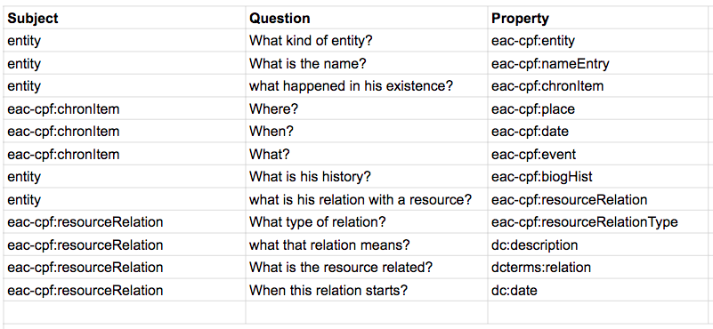
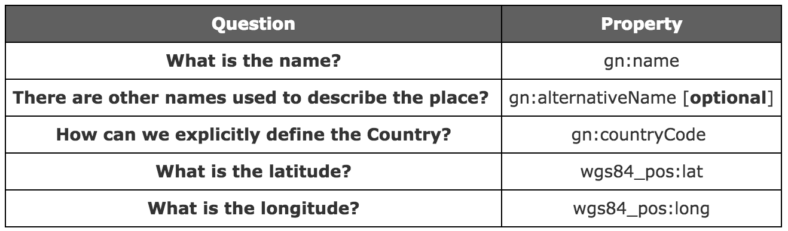
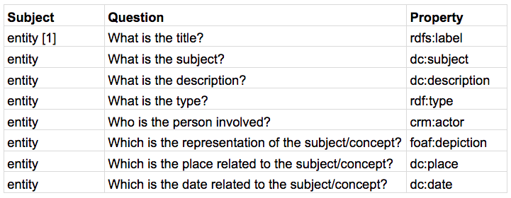

In this section, we present the conceptual model that has to answer the previous questions and then wrap data. For each type of class describable, here we define all the right properties, from the ontologies, filling up the following tables.
As we already describe in the theoretical model for answering the question we are going to use EAC-CPF. In the properties table will be used the namespace eac-cpf defined. A little note here: we need to add more information about the type of relations adding the description property given by Dublin Core (and the properties defined by DCTERMS).

The date is described in the format proposed by the w3 Consortium. In particular, for what concern our case, we opted for the following implementation: DD/MM/YYYY. This is the proper format used in Central and South Europe, in particular in Italy.
We choose to describe places with the GeoNames Ontology and the Basic Geo (WGS84 lat/long) Vocabulary. In fact, for answering at the questions we should define the following namespaces.

For answering the questions raised during the theoretical model development we have used the DC, RDF(S), CIDOC-CRM and FOAF ontologies. defined as follows:
